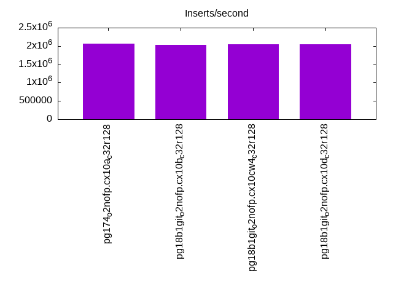
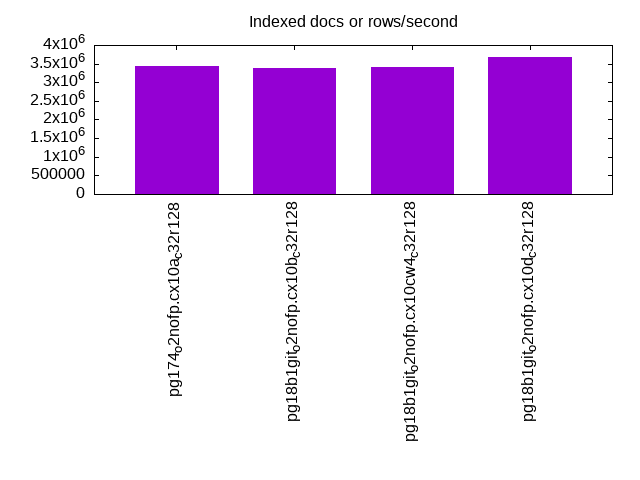
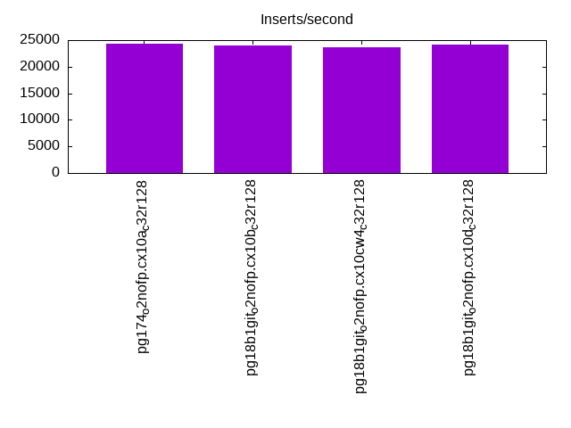
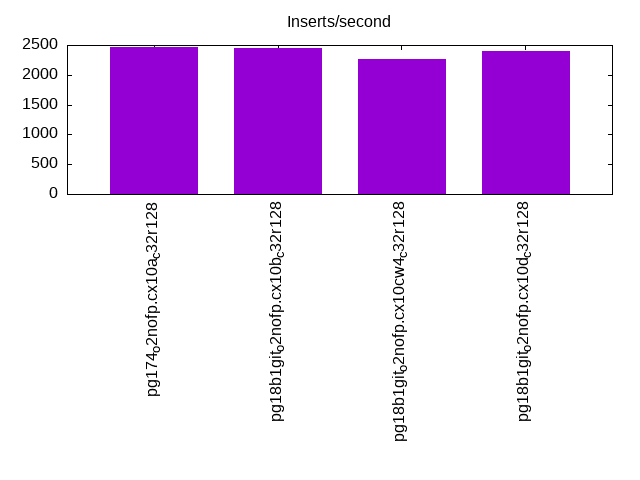
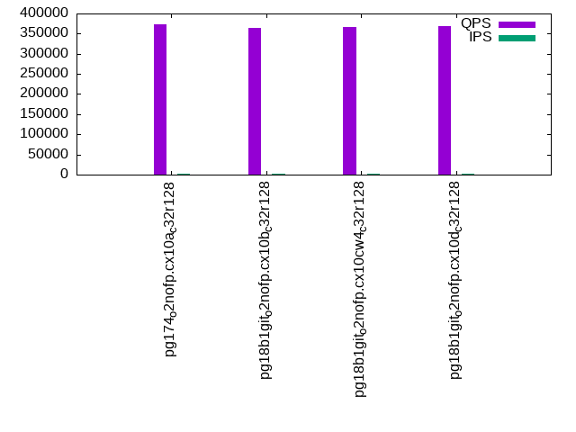
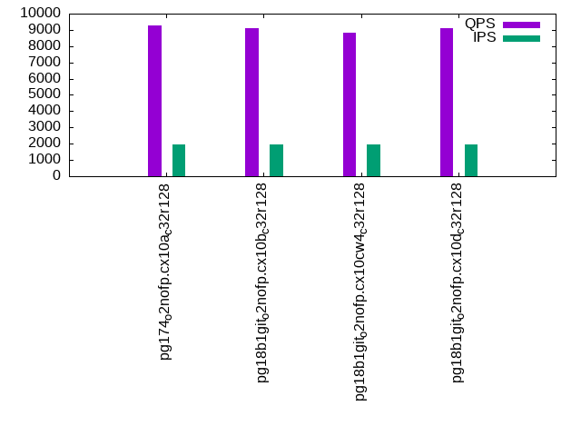
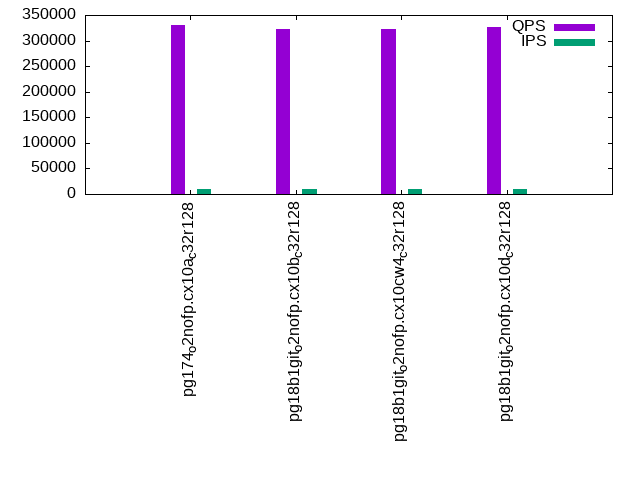
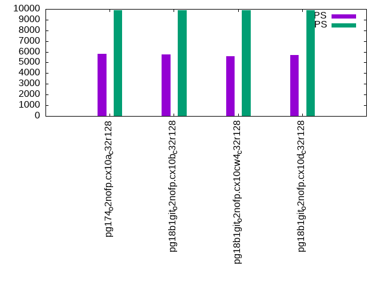
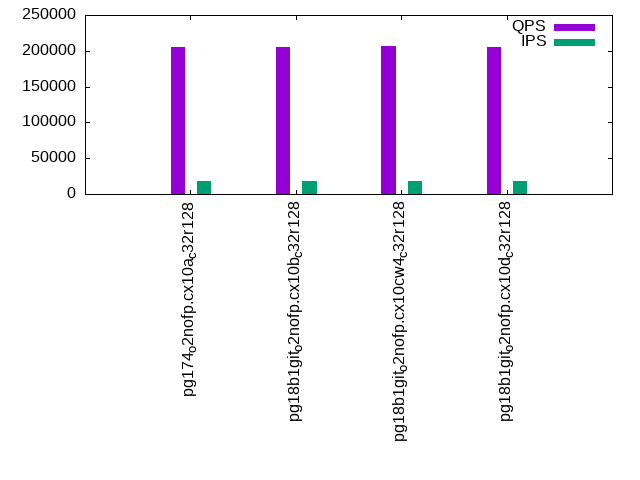
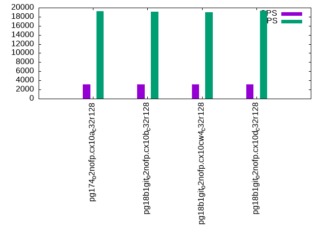

This is a report for the insert benchmark with 4000M docs and 20 client(s). It is generated by scripts (bash, awk, sed) and Tufte might not be impressed. An overview of the insert benchmark is here and a short update is here. Below, by DBMS, I mean DBMS+version.config. An example is my8020.c10b40 where my means MySQL, 8020 is version 8.0.20 and c10b40 is the name for the configuration file.
The test server has 48 AMD cores, 128G RAM and RAID 10 with 2 NVMe devices. It is described here. The benchmark was run with 20 clients and there were 1 or 3 connections per client (1 for queries or inserts without rate limits, 1+1 for rate limited inserts+deletes). It uses 20 tables with a table per client. It loads 200M rows per table without secondary indexes, creates 3 secondary indexes per table, then inserts 4m+1m rows per table with a delete per insert to avoid growing the table. It then does 6 read+write tests for 1800s each that do queries as fast as possible with 100,100,500,500,1000,1000 inserts/s and the same for deletes/s per client concurrent with the queries. The database is larger than memory. Clients and the DBMS share one server. The per-database configs are in the per-database subdirectories here.
The tested DBMS are:
The numbers are inserts/s for l.i0, l.i1 and l.i2, indexed docs (or rows) /s for l.x and queries/s for qr100, qp100 thru qr1000, qp1000" The values are the average rate over the entire test for inserts (IPS) and queries (QPS). The range of values for IPS and QPS is split into 3 parts: bottom 25%, middle 50%, top 25%. Values in the bottom 25% have a red background, values in the top 25% have a green background and values in the middle have no color. A gray background is used for values that can be ignored because the DBMS did not sustain the target insert rate. Red backgrounds are not used when the minimum value is within 80% of the max value.
| dbms | l.i0 | l.x | l.i1 | l.i2 | qr100 | qp100 | qr500 | qp500 | qr1000 | qp1000 |
|---|---|---|---|---|---|---|---|---|---|---|
| pg174_o2nofp.cx10a_c32r128 | 2058672 | 3430532 | 24286 | 2460 | 373754 | 9268 | 331273 | 5814 | 205917 | 3154 |
| pg18b1git_o2nofp.cx10b_c32r128 | 2027369 | 3384095 | 24031 | 2450 | 364958 | 9114 | 322046 | 5731 | 205339 | 3156 |
| pg18b1git_o2nofp.cx10cw4_c32r128 | 2041858 | 3407155 | 23704 | 2263 | 365876 | 8818 | 322634 | 5587 | 206986 | 3079 |
| pg18b1git_o2nofp.cx10d_c32r128 | 2041858 | 3690037 | 24118 | 2399 | 369429 | 9095 | 326308 | 5682 | 204709 | 3149 |
This table has relative throughput, throughput for the DBMS relative to the DBMS in the first line, using the absolute throughput from the previous table. Values less than 0.95 have a yellow background. Values greater than 1.05 have a blue background.
| dbms | l.i0 | l.x | l.i1 | l.i2 | qr100 | qp100 | qr500 | qp500 | qr1000 | qp1000 |
|---|---|---|---|---|---|---|---|---|---|---|
| pg174_o2nofp.cx10a_c32r128 | 1.00 | 1.00 | 1.00 | 1.00 | 1.00 | 1.00 | 1.00 | 1.00 | 1.00 | 1.00 |
| pg18b1git_o2nofp.cx10b_c32r128 | 0.98 | 0.99 | 0.99 | 1.00 | 0.98 | 0.98 | 0.97 | 0.99 | 1.00 | 1.00 |
| pg18b1git_o2nofp.cx10cw4_c32r128 | 0.99 | 0.99 | 0.98 | 0.92 | 0.98 | 0.95 | 0.97 | 0.96 | 1.01 | 0.98 |
| pg18b1git_o2nofp.cx10d_c32r128 | 0.99 | 1.08 | 0.99 | 0.98 | 0.99 | 0.98 | 0.99 | 0.98 | 0.99 | 1.00 |
This lists the average rate of inserts/s for the tests that do inserts concurrent with queries. For such tests the query rate is listed in the table above. The read+write tests are setup so that the insert rate should match the target rate every second. Cells that are not at least 95% of the target have a red background to indicate a failure to satisfy the target.
| dbms | qr100.L1 | qp100.L2 | qr500.L3 | qp500.L4 | qr1000.L5 | qp1000.L6 |
|---|---|---|---|---|---|---|
| pg174_o2nofp.cx10a_c32r128 | 1977 | 1977 | 9885 | 9879 | 18452 | 19262 |
| pg18b1git_o2nofp.cx10b_c32r128 | 1977 | 1977 | 9874 | 9879 | 18721 | 19128 |
| pg18b1git_o2nofp.cx10cw4_c32r128 | 1977 | 1976 | 9868 | 9879 | 18692 | 19048 |
| pg18b1git_o2nofp.cx10d_c32r128 | 1977 | 1977 | 9847 | 9879 | 18585 | 19324 |
| target | 2000 | 2000 | 10000 | 10000 | 20000 | 20000 |
l.i0: load without secondary indexes. Graphs for performance per 1-second interval are here.
Average throughput:
Insert response time histogram: each cell has the percentage of responses that take <= the time in the header and max is the max response time in seconds. For the max column values in the top 25% of the range have a red background and in the bottom 25% of the range have a green background. The red background is not used when the min value is within 80% of the max value.
| dbms | 256us | 1ms | 4ms | 16ms | 64ms | 256ms | 1s | 4s | 16s | gt | max |
|---|---|---|---|---|---|---|---|---|---|---|---|
| pg174_o2nofp.cx10a_c32r128 | 89.140 | 10.546 | 0.233 | 0.069 | 0.007 | 0.004 | nonzero | 1.117 | |||
| pg18b1git_o2nofp.cx10b_c32r128 | 90.157 | 9.328 | 0.411 | 0.093 | 0.005 | 0.007 | nonzero | 1.364 | |||
| pg18b1git_o2nofp.cx10cw4_c32r128 | 90.358 | 9.210 | 0.324 | 0.096 | 0.005 | 0.006 | nonzero | 1.365 | |||
| pg18b1git_o2nofp.cx10d_c32r128 | 90.449 | 9.151 | 0.306 | 0.083 | 0.005 | 0.006 | nonzero | 1.649 |
Performance metrics for the DBMS listed above. Some are normalized by throughput, others are not. Legend for results is here.
ips qps rps rmbps wps wmbps rpq rkbpq wpi wkbpi csps cpups cspq cpupq dbgb1 dbgb2 rss maxop p50 p99 tag 2058672 0 1750 14.0 8661.4 829.9 0.001 0.007 0.004 0.413 376027 57.4 0.183 13 382.7 478.8 93.1 1.117 109782 50646 pg174_o2nofp.cx10a_c32r128 2027369 0 1737 13.9 8469.4 808.8 0.001 0.007 0.004 0.409 329202 56.3 0.162 13 382.7 478.8 90.7 1.364 111243 33164 pg18b1git_o2nofp.cx10b_c32r128 2041858 0 1678 13.5 8552.2 812.7 0.001 0.007 0.004 0.408 344523 56.7 0.169 13 382.7 478.8 93.6 1.365 110576 36860 pg18b1git_o2nofp.cx10cw4_c32r128 2041858 0 1706 13.7 8545.8 817.5 0.001 0.007 0.004 0.410 356846 56.8 0.175 13 382.7 478.8 94.3 1.649 111334 29568 pg18b1git_o2nofp.cx10d_c32r128
l.x: create secondary indexes.
Average throughput:
Performance metrics for the DBMS listed above. Some are normalized by throughput, others are not. Legend for results is here.
ips qps rps rmbps wps wmbps rpq rkbpq wpi wkbpi csps cpups cspq cpupq dbgb1 dbgb2 rss maxop p50 p99 tag 3430532 0 11204 1091.2 8707.9 972.9 0.003 0.326 0.003 0.290 89895 23.7 0.026 3 768.4 863.7 29.6 0.044 NA NA pg174_o2nofp.cx10a_c32r128 3384095 0 11064 1077.3 8628.5 966.9 0.003 0.326 0.003 0.293 90258 23.5 0.027 3 768.4 863.7 40.2 0.027 NA NA pg18b1git_o2nofp.cx10b_c32r128 3407155 0 11443 1082.0 8729.2 975.8 0.003 0.325 0.003 0.293 94770 23.7 0.028 3 768.4 863.7 46.5 0.114 NA NA pg18b1git_o2nofp.cx10cw4_c32r128 3690037 0 12327 1171.8 9319.7 1050.6 0.003 0.325 0.003 0.292 117363 26.1 0.032 3 768.4 863.7 20.5 0.021 NA NA pg18b1git_o2nofp.cx10d_c32r128
l.i1: continue load after secondary indexes created with 50 inserts per transaction. Graphs for performance per 1-second interval are here.
Average throughput:
Insert response time histogram: each cell has the percentage of responses that take <= the time in the header and max is the max response time in seconds. For the max column values in the top 25% of the range have a red background and in the bottom 25% of the range have a green background. The red background is not used when the min value is within 80% of the max value.
| dbms | 256us | 1ms | 4ms | 16ms | 64ms | 256ms | 1s | 4s | 16s | gt | max |
|---|---|---|---|---|---|---|---|---|---|---|---|
| pg174_o2nofp.cx10a_c32r128 | 20.454 | 69.471 | 9.881 | 0.094 | 0.100 | 3.337 | |||||
| pg18b1git_o2nofp.cx10b_c32r128 | 16.385 | 73.728 | 9.666 | 0.103 | 0.119 | 3.597 | |||||
| pg18b1git_o2nofp.cx10cw4_c32r128 | 17.045 | 72.482 | 10.279 | 0.077 | 0.117 | 3.797 | |||||
| pg18b1git_o2nofp.cx10d_c32r128 | 17.577 | 73.102 | 9.133 | 0.082 | 0.106 | 2.735 |
Delete response time histogram: each cell has the percentage of responses that take <= the time in the header and max is the max response time in seconds. For the max column values in the top 25% of the range have a red background and in the bottom 25% of the range have a green background. The red background is not used when the min value is within 80% of the max value.
| dbms | 256us | 1ms | 4ms | 16ms | 64ms | 256ms | 1s | 4s | 16s | gt | max |
|---|---|---|---|---|---|---|---|---|---|---|---|
| pg174_o2nofp.cx10a_c32r128 | 2.408 | 8.548 | 22.836 | 62.612 | 3.498 | 0.046 | 0.052 | 2.607 | |||
| pg18b1git_o2nofp.cx10b_c32r128 | 2.431 | 9.028 | 23.327 | 64.040 | 1.078 | 0.034 | 0.062 | 2.819 | |||
| pg18b1git_o2nofp.cx10cw4_c32r128 | 2.435 | 8.627 | 24.347 | 62.836 | 1.659 | 0.034 | 0.062 | 2.752 | |||
| pg18b1git_o2nofp.cx10d_c32r128 | 2.492 | 9.288 | 21.702 | 64.753 | 1.663 | 0.034 | 0.067 | 2.751 |
Performance metrics for the DBMS listed above. Some are normalized by throughput, others are not. Legend for results is here.
ips qps rps rmbps wps wmbps rpq rkbpq wpi wkbpi csps cpups cspq cpupq dbgb1 dbgb2 rss maxop p50 p99 tag 24286 0 30647 243.5 35938.3 787.5 1.262 10.266 1.480 33.203 84303 30.8 3.471 609 781.5 877.6 88.0 3.337 1149 0 pg174_o2nofp.cx10a_c32r128 24031 0 30351 242.1 35649.1 786.8 1.263 10.318 1.483 33.526 86522 30.2 3.600 603 781.5 877.6 85.5 3.597 1199 0 pg18b1git_o2nofp.cx10b_c32r128 23704 0 30066 240.6 35205.8 779.3 1.268 10.395 1.485 33.664 84821 30.8 3.578 624 781.5 877.6 89.9 3.797 1199 0 pg18b1git_o2nofp.cx10cw4_c32r128 24118 0 30527 243.1 35779.2 785.1 1.266 10.322 1.483 33.334 86876 31.6 3.602 629 781.5 877.6 85.2 2.735 1249 0 pg18b1git_o2nofp.cx10d_c32r128
l.i2: continue load after secondary indexes created with 5 inserts per transaction. Graphs for performance per 1-second interval are here.
Average throughput:
Insert response time histogram: each cell has the percentage of responses that take <= the time in the header and max is the max response time in seconds. For the max column values in the top 25% of the range have a red background and in the bottom 25% of the range have a green background. The red background is not used when the min value is within 80% of the max value.
| dbms | 256us | 1ms | 4ms | 16ms | 64ms | 256ms | 1s | 4s | 16s | gt | max |
|---|---|---|---|---|---|---|---|---|---|---|---|
| pg174_o2nofp.cx10a_c32r128 | 0.074 | 39.749 | 59.985 | 0.043 | 0.106 | 0.020 | 0.020 | 0.002 | 1.798 | ||
| pg18b1git_o2nofp.cx10b_c32r128 | 0.183 | 38.771 | 60.801 | 0.091 | 0.105 | 0.022 | 0.024 | 0.003 | 2.436 | ||
| pg18b1git_o2nofp.cx10cw4_c32r128 | 0.150 | 36.556 | 63.115 | 0.069 | 0.091 | 0.010 | 0.007 | 0.002 | 3.944 | ||
| pg18b1git_o2nofp.cx10d_c32r128 | nonzero | 38.944 | 60.972 | 0.011 | 0.012 | 0.024 | 0.032 | 0.005 | 2.607 |
Delete response time histogram: each cell has the percentage of responses that take <= the time in the header and max is the max response time in seconds. For the max column values in the top 25% of the range have a red background and in the bottom 25% of the range have a green background. The red background is not used when the min value is within 80% of the max value.
| dbms | 256us | 1ms | 4ms | 16ms | 64ms | 256ms | 1s | 4s | 16s | gt | max |
|---|---|---|---|---|---|---|---|---|---|---|---|
| pg174_o2nofp.cx10a_c32r128 | 0.083 | 1.517 | 1.252 | 2.080 | 95.066 | 0.002 | nonzero | nonzero | 2.187 | ||
| pg18b1git_o2nofp.cx10b_c32r128 | 0.144 | 2.908 | 2.877 | 0.050 | 94.020 | 0.002 | 0.001 | nonzero | 1.959 | ||
| pg18b1git_o2nofp.cx10cw4_c32r128 | 0.104 | 2.314 | 4.971 | 0.190 | 92.417 | 0.003 | nonzero | nonzero | 1.394 | ||
| pg18b1git_o2nofp.cx10d_c32r128 | 0.045 | 99.953 | 0.001 | nonzero | nonzero | 1.348 |
Performance metrics for the DBMS listed above. Some are normalized by throughput, others are not. Legend for results is here.
ips qps rps rmbps wps wmbps rpq rkbpq wpi wkbpi csps cpups cspq cpupq dbgb1 dbgb2 rss maxop p50 p99 tag 2460 0 3054 26.6 4689.6 74.7 1.241 11.071 1.907 31.093 18669 28.2 7.590 5503 784.8 880.9 84.2 1.798 210 115 pg174_o2nofp.cx10a_c32r128 2450 0 3078 28.2 4613.2 73.1 1.256 11.768 1.883 30.559 18546 27.8 7.570 5447 784.8 880.8 77.4 2.436 215 175 pg18b1git_o2nofp.cx10b_c32r128 2263 0 2867 26.7 4056.9 66.0 1.267 12.070 1.792 29.860 17533 34.9 7.746 7401 784.7 880.7 89.9 3.944 215 190 pg18b1git_o2nofp.cx10cw4_c32r128 2399 0 2936 23.4 4542.7 71.1 1.224 9.983 1.893 30.367 18298 29.5 7.627 5902 784.9 880.9 77.9 2.607 215 165 pg18b1git_o2nofp.cx10d_c32r128
qr100.L1: range queries with 100 insert/s per client. Graphs for performance per 1-second interval are here.
Average throughput:
Query response time histogram: each cell has the percentage of responses that take <= the time in the header and max is the max response time in seconds. For max values in the top 25% of the range have a red background and in the bottom 25% of the range have a green background. The red background is not used when the min value is within 80% of the max value.
| dbms | 256us | 1ms | 4ms | 16ms | 64ms | 256ms | 1s | 4s | 16s | gt | max |
|---|---|---|---|---|---|---|---|---|---|---|---|
| pg174_o2nofp.cx10a_c32r128 | 99.993 | 0.006 | 0.001 | nonzero | nonzero | nonzero | nonzero | 1.310 | |||
| pg18b1git_o2nofp.cx10b_c32r128 | 99.993 | 0.006 | 0.001 | nonzero | 0.011 | ||||||
| pg18b1git_o2nofp.cx10cw4_c32r128 | 99.993 | 0.006 | 0.001 | nonzero | nonzero | nonzero | nonzero | 0.283 | |||
| pg18b1git_o2nofp.cx10d_c32r128 | 99.993 | 0.006 | 0.001 | nonzero | nonzero | nonzero | nonzero | 0.357 |
Insert response time histogram: each cell has the percentage of responses that take <= the time in the header and max is the max response time in seconds. For max values in the top 25% of the range have a red background and in the bottom 25% of the range have a green background. The red background is not used when the min value is within 80% of the max value.
| dbms | 256us | 1ms | 4ms | 16ms | 64ms | 256ms | 1s | 4s | 16s | gt | max |
|---|---|---|---|---|---|---|---|---|---|---|---|
| pg174_o2nofp.cx10a_c32r128 | 98.929 | 1.060 | 0.008 | 0.003 | 1.139 | ||||||
| pg18b1git_o2nofp.cx10b_c32r128 | 98.862 | 1.121 | 0.017 | 0.222 | |||||||
| pg18b1git_o2nofp.cx10cw4_c32r128 | 98.447 | 1.553 | 0.063 | ||||||||
| pg18b1git_o2nofp.cx10d_c32r128 | 98.674 | 1.322 | 0.004 | 0.236 |
Delete response time histogram: each cell has the percentage of responses that take <= the time in the header and max is the max response time in seconds. For max values in the top 25% of the range have a red background and in the bottom 25% of the range have a green background. The red background is not used when the min value is within 80% of the max value.
| dbms | 256us | 1ms | 4ms | 16ms | 64ms | 256ms | 1s | 4s | 16s | gt | max |
|---|---|---|---|---|---|---|---|---|---|---|---|
| pg174_o2nofp.cx10a_c32r128 | 44.775 | 55.163 | 0.061 | 0.001 | 0.153 | ||||||
| pg18b1git_o2nofp.cx10b_c32r128 | 46.454 | 53.490 | 0.056 | 0.013 | |||||||
| pg18b1git_o2nofp.cx10cw4_c32r128 | 46.374 | 53.583 | 0.040 | 0.003 | 0.018 | ||||||
| pg18b1git_o2nofp.cx10d_c32r128 | 45.240 | 54.711 | 0.047 | 0.001 | 0.021 |
Performance metrics for the DBMS listed above. Some are normalized by throughput, others are not. Legend for results is here.
ips qps rps rmbps wps wmbps rpq rkbpq wpi wkbpi csps cpups cspq cpupq dbgb1 dbgb2 rss maxop p50 p99 tag 1977 373754 2715 21.8 1251.8 36.2 0.007 0.060 0.633 18.764 1422112 42.8 3.805 55 784.9 881.0 95.1 1.310 19163 17197 pg174_o2nofp.cx10a_c32r128 1977 364958 2667 21.5 1294.4 36.6 0.007 0.060 0.655 18.978 1389056 43.1 3.806 57 784.9 880.9 95.7 0.011 18828 17022 pg18b1git_o2nofp.cx10b_c32r128 1977 365876 2667 21.4 1270.4 36.4 0.007 0.060 0.643 18.859 1392140 43.0 3.805 56 784.8 880.8 96.2 0.283 18739 16926 pg18b1git_o2nofp.cx10cw4_c32r128 1977 369429 2670 21.5 1280.4 36.5 0.007 0.060 0.648 18.905 1405775 43.0 3.805 56 785.0 881.0 95.7 0.357 18732 17027 pg18b1git_o2nofp.cx10d_c32r128
qp100.L2: point queries with 100 insert/s per client. Graphs for performance per 1-second interval are here.
Average throughput:
Query response time histogram: each cell has the percentage of responses that take <= the time in the header and max is the max response time in seconds. For max values in the top 25% of the range have a red background and in the bottom 25% of the range have a green background. The red background is not used when the min value is within 80% of the max value.
| dbms | 256us | 1ms | 4ms | 16ms | 64ms | 256ms | 1s | 4s | 16s | gt | max |
|---|---|---|---|---|---|---|---|---|---|---|---|
| pg174_o2nofp.cx10a_c32r128 | nonzero | 2.913 | 94.241 | 0.418 | 2.425 | 0.001 | 0.001 | 0.001 | 2.357 | ||
| pg18b1git_o2nofp.cx10b_c32r128 | nonzero | 2.708 | 94.426 | 0.434 | 2.428 | 0.002 | 0.002 | 0.001 | nonzero | 4.489 | |
| pg18b1git_o2nofp.cx10cw4_c32r128 | nonzero | 2.431 | 94.503 | 0.445 | 2.617 | 0.003 | 0.001 | 0.002 | 2.444 | ||
| pg18b1git_o2nofp.cx10d_c32r128 | nonzero | 2.746 | 94.471 | 0.362 | 2.417 | 0.002 | 0.002 | 0.001 | 3.325 |
Insert response time histogram: each cell has the percentage of responses that take <= the time in the header and max is the max response time in seconds. For max values in the top 25% of the range have a red background and in the bottom 25% of the range have a green background. The red background is not used when the min value is within 80% of the max value.
| dbms | 256us | 1ms | 4ms | 16ms | 64ms | 256ms | 1s | 4s | 16s | gt | max |
|---|---|---|---|---|---|---|---|---|---|---|---|
| pg174_o2nofp.cx10a_c32r128 | 64.375 | 35.250 | 0.067 | 0.218 | 0.090 | 1.934 | |||||
| pg18b1git_o2nofp.cx10b_c32r128 | 62.574 | 36.690 | 0.219 | 0.326 | 0.163 | 0.028 | 4.152 | ||||
| pg18b1git_o2nofp.cx10cw4_c32r128 | 60.053 | 39.215 | 0.217 | 0.321 | 0.194 | 2.133 | |||||
| pg18b1git_o2nofp.cx10d_c32r128 | 65.315 | 34.174 | 0.139 | 0.199 | 0.174 | 2.495 |
Delete response time histogram: each cell has the percentage of responses that take <= the time in the header and max is the max response time in seconds. For max values in the top 25% of the range have a red background and in the bottom 25% of the range have a green background. The red background is not used when the min value is within 80% of the max value.
| dbms | 256us | 1ms | 4ms | 16ms | 64ms | 256ms | 1s | 4s | 16s | gt | max |
|---|---|---|---|---|---|---|---|---|---|---|---|
| pg174_o2nofp.cx10a_c32r128 | 92.510 | 4.175 | 3.307 | 0.008 | 0.605 | ||||||
| pg18b1git_o2nofp.cx10b_c32r128 | 92.847 | 4.043 | 3.022 | 0.007 | 0.071 | 0.010 | 3.113 | ||||
| pg18b1git_o2nofp.cx10cw4_c32r128 | 91.811 | 4.603 | 3.519 | 0.026 | 0.029 | 0.011 | 2.099 | ||||
| pg18b1git_o2nofp.cx10d_c32r128 | 93.674 | 2.918 | 3.306 | 0.058 | 0.042 | 0.003 | 2.033 |
Performance metrics for the DBMS listed above. Some are normalized by throughput, others are not. Legend for results is here.
ips qps rps rmbps wps wmbps rpq rkbpq wpi wkbpi csps cpups cspq cpupq dbgb1 dbgb2 rss maxop p50 p99 tag 1977 9268 129015 1012.7 6684.9 77.0 13.920 111.886 3.381 39.903 291038 23.7 31.402 1227 785.0 881.1 91.0 2.357 479 240 pg174_o2nofp.cx10a_c32r128 1977 9114 126987 996.8 6703.5 76.9 13.932 111.983 3.391 39.829 287142 23.6 31.504 1243 785.0 881.0 90.9 4.489 479 64 pg18b1git_o2nofp.cx10b_c32r128 1976 8818 123157 966.7 6739.6 77.8 13.966 112.251 3.411 40.345 279052 24.1 31.645 1312 784.9 880.9 91.1 2.444 463 112 pg18b1git_o2nofp.cx10cw4_c32r128 1977 9095 126722 994.6 6725.3 77.1 13.933 111.984 3.402 39.915 285912 24.1 31.435 1272 785.1 881.1 90.6 3.325 479 192 pg18b1git_o2nofp.cx10d_c32r128
qr500.L3: range queries with 500 insert/s per client. Graphs for performance per 1-second interval are here.
Average throughput:
Query response time histogram: each cell has the percentage of responses that take <= the time in the header and max is the max response time in seconds. For max values in the top 25% of the range have a red background and in the bottom 25% of the range have a green background. The red background is not used when the min value is within 80% of the max value.
| dbms | 256us | 1ms | 4ms | 16ms | 64ms | 256ms | 1s | 4s | 16s | gt | max |
|---|---|---|---|---|---|---|---|---|---|---|---|
| pg174_o2nofp.cx10a_c32r128 | 99.962 | 0.030 | 0.006 | 0.001 | 0.001 | nonzero | nonzero | nonzero | 1.017 | ||
| pg18b1git_o2nofp.cx10b_c32r128 | 99.960 | 0.032 | 0.006 | 0.002 | 0.001 | nonzero | nonzero | nonzero | 1.775 | ||
| pg18b1git_o2nofp.cx10cw4_c32r128 | 99.957 | 0.034 | 0.006 | 0.002 | 0.001 | nonzero | nonzero | nonzero | 1.783 | ||
| pg18b1git_o2nofp.cx10d_c32r128 | 99.959 | 0.032 | 0.006 | 0.002 | 0.001 | nonzero | nonzero | nonzero | 2.326 |
Insert response time histogram: each cell has the percentage of responses that take <= the time in the header and max is the max response time in seconds. For max values in the top 25% of the range have a red background and in the bottom 25% of the range have a green background. The red background is not used when the min value is within 80% of the max value.
| dbms | 256us | 1ms | 4ms | 16ms | 64ms | 256ms | 1s | 4s | 16s | gt | max |
|---|---|---|---|---|---|---|---|---|---|---|---|
| pg174_o2nofp.cx10a_c32r128 | 80.888 | 18.229 | 0.413 | 0.451 | 0.019 | 1.848 | |||||
| pg18b1git_o2nofp.cx10b_c32r128 | 80.306 | 18.927 | 0.382 | 0.316 | 0.069 | 2.459 | |||||
| pg18b1git_o2nofp.cx10cw4_c32r128 | 79.210 | 19.996 | 0.410 | 0.348 | 0.036 | 1.992 | |||||
| pg18b1git_o2nofp.cx10d_c32r128 | 82.242 | 16.737 | 0.474 | 0.428 | 0.118 | 0.001 | 4.090 |
Delete response time histogram: each cell has the percentage of responses that take <= the time in the header and max is the max response time in seconds. For max values in the top 25% of the range have a red background and in the bottom 25% of the range have a green background. The red background is not used when the min value is within 80% of the max value.
| dbms | 256us | 1ms | 4ms | 16ms | 64ms | 256ms | 1s | 4s | 16s | gt | max |
|---|---|---|---|---|---|---|---|---|---|---|---|
| pg174_o2nofp.cx10a_c32r128 | 32.891 | 65.945 | 1.136 | 0.011 | 0.016 | nonzero | 1.089 | ||||
| pg18b1git_o2nofp.cx10b_c32r128 | 38.681 | 60.082 | 1.213 | 0.010 | 0.010 | 0.005 | 2.113 | ||||
| pg18b1git_o2nofp.cx10cw4_c32r128 | 35.861 | 62.660 | 1.458 | 0.007 | 0.009 | 0.004 | 1.893 | ||||
| pg18b1git_o2nofp.cx10d_c32r128 | 37.603 | 60.737 | 1.634 | 0.009 | 0.011 | 0.007 | 2.098 |
Performance metrics for the DBMS listed above. Some are normalized by throughput, others are not. Legend for results is here.
ips qps rps rmbps wps wmbps rpq rkbpq wpi wkbpi csps cpups cspq cpupq dbgb1 dbgb2 rss maxop p50 p99 tag 9885 331273 13840 111.6 14431.7 242.7 0.042 0.345 1.460 25.143 1243650 49.0 3.754 71 785.5 881.6 85.7 1.017 17006 14400 pg174_o2nofp.cx10a_c32r128 9874 322046 13810 111.4 14421.7 242.3 0.043 0.354 1.461 25.125 1209505 48.7 3.756 73 785.4 881.4 86.6 1.775 16505 14145 pg18b1git_o2nofp.cx10b_c32r128 9868 322634 13808 111.3 14411.6 242.2 0.043 0.353 1.460 25.131 1209288 48.7 3.748 72 785.4 881.4 86.1 1.783 16558 14065 pg18b1git_o2nofp.cx10cw4_c32r128 9847 326308 13769 111.0 14371.8 241.6 0.042 0.348 1.460 25.125 1225131 48.7 3.755 72 785.6 881.6 87.2 2.326 16702 13729 pg18b1git_o2nofp.cx10d_c32r128
qp500.L4: point queries with 500 insert/s per client. Graphs for performance per 1-second interval are here.
Average throughput:
Query response time histogram: each cell has the percentage of responses that take <= the time in the header and max is the max response time in seconds. For max values in the top 25% of the range have a red background and in the bottom 25% of the range have a green background. The red background is not used when the min value is within 80% of the max value.
| dbms | 256us | 1ms | 4ms | 16ms | 64ms | 256ms | 1s | 4s | 16s | gt | max |
|---|---|---|---|---|---|---|---|---|---|---|---|
| pg174_o2nofp.cx10a_c32r128 | 0.263 | 93.848 | 1.470 | 4.401 | 0.010 | 0.008 | nonzero | 1.124 | |||
| pg18b1git_o2nofp.cx10b_c32r128 | 0.233 | 93.938 | 1.336 | 4.473 | 0.012 | 0.008 | 0.001 | 1.468 | |||
| pg18b1git_o2nofp.cx10cw4_c32r128 | 0.207 | 93.899 | 1.173 | 4.689 | 0.019 | 0.011 | 0.001 | 2.640 | |||
| pg18b1git_o2nofp.cx10d_c32r128 | 0.212 | 94.035 | 1.193 | 4.543 | 0.010 | 0.006 | nonzero | 1.295 |
Insert response time histogram: each cell has the percentage of responses that take <= the time in the header and max is the max response time in seconds. For max values in the top 25% of the range have a red background and in the bottom 25% of the range have a green background. The red background is not used when the min value is within 80% of the max value.
| dbms | 256us | 1ms | 4ms | 16ms | 64ms | 256ms | 1s | 4s | 16s | gt | max |
|---|---|---|---|---|---|---|---|---|---|---|---|
| pg174_o2nofp.cx10a_c32r128 | 34.973 | 64.321 | 0.448 | 0.249 | 0.010 | 1.243 | |||||
| pg18b1git_o2nofp.cx10b_c32r128 | 39.388 | 59.969 | 0.386 | 0.240 | 0.017 | 1.663 | |||||
| pg18b1git_o2nofp.cx10cw4_c32r128 | 48.277 | 50.938 | 0.452 | 0.301 | 0.032 | 2.333 | |||||
| pg18b1git_o2nofp.cx10d_c32r128 | 45.771 | 53.783 | 0.283 | 0.137 | 0.026 | 1.911 |
Delete response time histogram: each cell has the percentage of responses that take <= the time in the header and max is the max response time in seconds. For max values in the top 25% of the range have a red background and in the bottom 25% of the range have a green background. The red background is not used when the min value is within 80% of the max value.
| dbms | 256us | 1ms | 4ms | 16ms | 64ms | 256ms | 1s | 4s | 16s | gt | max |
|---|---|---|---|---|---|---|---|---|---|---|---|
| pg174_o2nofp.cx10a_c32r128 | 69.511 | 30.172 | 0.170 | 0.141 | 0.006 | 1.139 | |||||
| pg18b1git_o2nofp.cx10b_c32r128 | 70.066 | 29.664 | 0.138 | 0.128 | 0.004 | 1.362 | |||||
| pg18b1git_o2nofp.cx10cw4_c32r128 | 71.626 | 28.064 | 0.149 | 0.156 | 0.006 | 2.250 | |||||
| pg18b1git_o2nofp.cx10d_c32r128 | 70.032 | 29.792 | 0.083 | 0.092 | 0.001 | 1.135 |
Performance metrics for the DBMS listed above. Some are normalized by throughput, others are not. Legend for results is here.
ips qps rps rmbps wps wmbps rpq rkbpq wpi wkbpi csps cpups cspq cpupq dbgb1 dbgb2 rss maxop p50 p99 tag 9879 5814 102452 804.7 22454.8 302.0 17.623 141.748 2.273 31.301 236296 37.6 40.646 3105 786.1 882.1 28.8 1.124 304 144 pg174_o2nofp.cx10a_c32r128 9879 5731 101294 795.6 22339.7 301.0 17.676 142.171 2.261 31.198 234079 37.6 40.846 3149 785.8 881.9 28.9 1.468 288 128 pg18b1git_o2nofp.cx10b_c32r128 9879 5587 99331 779.7 22475.6 301.8 17.780 142.909 2.275 31.287 230669 37.7 41.290 3239 786.5 882.6 31.5 2.640 288 96 pg18b1git_o2nofp.cx10cw4_c32r128 9879 5682 100633 790.3 22317.9 300.9 17.711 142.427 2.259 31.192 233226 37.9 41.047 3202 786.4 882.4 27.1 1.295 288 128 pg18b1git_o2nofp.cx10d_c32r128
qr1000.L5: range queries with 1000 insert/s per client. Graphs for performance per 1-second interval are here.
Average throughput:
Query response time histogram: each cell has the percentage of responses that take <= the time in the header and max is the max response time in seconds. For max values in the top 25% of the range have a red background and in the bottom 25% of the range have a green background. The red background is not used when the min value is within 80% of the max value.
| dbms | 256us | 1ms | 4ms | 16ms | 64ms | 256ms | 1s | 4s | 16s | gt | max |
|---|---|---|---|---|---|---|---|---|---|---|---|
| pg174_o2nofp.cx10a_c32r128 | 99.568 | 0.326 | 0.039 | 0.043 | 0.024 | nonzero | nonzero | nonzero | 3.985 | ||
| pg18b1git_o2nofp.cx10b_c32r128 | 99.558 | 0.345 | 0.040 | 0.038 | 0.020 | nonzero | nonzero | nonzero | 2.134 | ||
| pg18b1git_o2nofp.cx10cw4_c32r128 | 99.562 | 0.342 | 0.040 | 0.038 | 0.018 | nonzero | nonzero | nonzero | 3.952 | ||
| pg18b1git_o2nofp.cx10d_c32r128 | 99.542 | 0.356 | 0.041 | 0.041 | 0.021 | nonzero | nonzero | nonzero | 2.868 |
Insert response time histogram: each cell has the percentage of responses that take <= the time in the header and max is the max response time in seconds. For max values in the top 25% of the range have a red background and in the bottom 25% of the range have a green background. The red background is not used when the min value is within 80% of the max value.
| dbms | 256us | 1ms | 4ms | 16ms | 64ms | 256ms | 1s | 4s | 16s | gt | max |
|---|---|---|---|---|---|---|---|---|---|---|---|
| pg174_o2nofp.cx10a_c32r128 | 39.608 | 45.333 | 14.875 | 0.072 | 0.106 | 0.005 | 4.902 | ||||
| pg18b1git_o2nofp.cx10b_c32r128 | 38.063 | 48.149 | 13.603 | 0.099 | 0.087 | 3.638 | |||||
| pg18b1git_o2nofp.cx10cw4_c32r128 | 38.333 | 48.448 | 13.045 | 0.073 | 0.099 | 0.002 | 6.595 | ||||
| pg18b1git_o2nofp.cx10d_c32r128 | 35.404 | 49.869 | 14.561 | 0.063 | 0.101 | 0.002 | 4.399 |
Delete response time histogram: each cell has the percentage of responses that take <= the time in the header and max is the max response time in seconds. For max values in the top 25% of the range have a red background and in the bottom 25% of the range have a green background. The red background is not used when the min value is within 80% of the max value.
| dbms | 256us | 1ms | 4ms | 16ms | 64ms | 256ms | 1s | 4s | 16s | gt | max |
|---|---|---|---|---|---|---|---|---|---|---|---|
| pg174_o2nofp.cx10a_c32r128 | 37.097 | 58.707 | 4.116 | 0.023 | 0.057 | 0.001 | 4.049 | ||||
| pg18b1git_o2nofp.cx10b_c32r128 | 36.498 | 61.188 | 2.227 | 0.043 | 0.044 | 2.167 | |||||
| pg18b1git_o2nofp.cx10cw4_c32r128 | 35.435 | 62.349 | 2.136 | 0.025 | 0.055 | 3.920 | |||||
| pg18b1git_o2nofp.cx10d_c32r128 | 33.903 | 63.471 | 2.544 | 0.026 | 0.055 | nonzero | 4.084 |
Performance metrics for the DBMS listed above. Some are normalized by throughput, others are not. Legend for results is here.
ips qps rps rmbps wps wmbps rpq rkbpq wpi wkbpi csps cpups cspq cpupq dbgb1 dbgb2 rss maxop p50 p99 tag 18452 205917 24582 197.9 26689.7 563.1 0.119 0.984 1.446 31.248 683968 63.1 3.322 147 788.9 932.0 76.9 3.985 10852 0 pg174_o2nofp.cx10a_c32r128 18721 205339 24968 201.1 26863.2 568.4 0.122 1.003 1.435 31.090 677203 64.5 3.298 151 788.4 936.3 77.2 2.134 10836 1550 pg18b1git_o2nofp.cx10b_c32r128 18692 206986 24939 200.5 26613.1 559.4 0.120 0.992 1.424 30.646 680252 64.6 3.286 150 789.7 885.7 79.5 3.952 11000 671 pg18b1git_o2nofp.cx10cw4_c32r128 18585 204709 24758 199.1 26766.4 564.9 0.121 0.996 1.440 31.124 674235 64.2 3.294 151 789.5 937.4 77.1 2.868 10740 80 pg18b1git_o2nofp.cx10d_c32r128
qp1000.L6: point queries with 1000 insert/s per client. Graphs for performance per 1-second interval are here.
Average throughput:
Query response time histogram: each cell has the percentage of responses that take <= the time in the header and max is the max response time in seconds. For max values in the top 25% of the range have a red background and in the bottom 25% of the range have a green background. The red background is not used when the min value is within 80% of the max value.
| dbms | 256us | 1ms | 4ms | 16ms | 64ms | 256ms | 1s | 4s | 16s | gt | max |
|---|---|---|---|---|---|---|---|---|---|---|---|
| pg174_o2nofp.cx10a_c32r128 | 0.002 | 73.334 | 18.588 | 7.940 | 0.089 | 0.042 | 0.004 | 3.932 | |||
| pg18b1git_o2nofp.cx10b_c32r128 | 0.002 | 73.684 | 18.324 | 7.860 | 0.083 | 0.044 | 0.003 | 0.001 | 6.061 | ||
| pg18b1git_o2nofp.cx10cw4_c32r128 | 0.002 | 72.814 | 18.693 | 8.367 | 0.082 | 0.038 | 0.003 | 0.001 | 7.582 | ||
| pg18b1git_o2nofp.cx10d_c32r128 | 0.001 | 72.654 | 19.266 | 7.952 | 0.089 | 0.033 | 0.004 | 1.960 |
Insert response time histogram: each cell has the percentage of responses that take <= the time in the header and max is the max response time in seconds. For max values in the top 25% of the range have a red background and in the bottom 25% of the range have a green background. The red background is not used when the min value is within 80% of the max value.
| dbms | 256us | 1ms | 4ms | 16ms | 64ms | 256ms | 1s | 4s | 16s | gt | max |
|---|---|---|---|---|---|---|---|---|---|---|---|
| pg174_o2nofp.cx10a_c32r128 | 10.694 | 80.744 | 8.140 | 0.378 | 0.043 | 3.951 | |||||
| pg18b1git_o2nofp.cx10b_c32r128 | 11.698 | 79.938 | 7.933 | 0.388 | 0.037 | 0.006 | 6.139 | ||||
| pg18b1git_o2nofp.cx10cw4_c32r128 | 11.228 | 79.839 | 8.539 | 0.354 | 0.036 | 0.004 | 7.247 | ||||
| pg18b1git_o2nofp.cx10d_c32r128 | 10.886 | 80.638 | 8.121 | 0.316 | 0.039 | 2.206 |
Delete response time histogram: each cell has the percentage of responses that take <= the time in the header and max is the max response time in seconds. For max values in the top 25% of the range have a red background and in the bottom 25% of the range have a green background. The red background is not used when the min value is within 80% of the max value.
| dbms | 256us | 1ms | 4ms | 16ms | 64ms | 256ms | 1s | 4s | 16s | gt | max |
|---|---|---|---|---|---|---|---|---|---|---|---|
| pg174_o2nofp.cx10a_c32r128 | 0.011 | 97.912 | 1.754 | 0.295 | 0.028 | 3.950 | |||||
| pg18b1git_o2nofp.cx10b_c32r128 | 0.011 | 98.226 | 1.430 | 0.314 | 0.017 | 0.003 | 6.023 | ||||
| pg18b1git_o2nofp.cx10cw4_c32r128 | 0.009 | 98.281 | 1.433 | 0.254 | 0.022 | 3.413 | |||||
| pg18b1git_o2nofp.cx10d_c32r128 | 0.013 | 98.250 | 1.467 | 0.250 | 0.020 | 1.979 |
Performance metrics for the DBMS listed above. Some are normalized by throughput, others are not. Legend for results is here.
ips qps rps rmbps wps wmbps rpq rkbpq wpi wkbpi csps cpups cspq cpupq dbgb1 dbgb2 rss maxop p50 p99 tag 19262 3154 82686 649.4 39450.4 576.3 26.217 210.834 2.048 30.640 196397 61.1 62.271 9299 793.2 889.2 64.1 3.932 160 16 pg174_o2nofp.cx10a_c32r128 19128 3156 82614 648.8 39211.7 574.8 26.174 210.493 2.050 30.771 196958 61.1 62.401 9292 792.7 888.8 60.2 6.061 160 16 pg18b1git_o2nofp.cx10b_c32r128 19048 3079 81202 637.7 39229.7 578.4 26.374 212.099 2.060 31.093 192190 61.7 62.424 9619 794.1 890.1 58.2 7.582 160 16 pg18b1git_o2nofp.cx10cw4_c32r128 19324 3149 82889 650.9 39404.9 579.4 26.320 211.639 2.039 30.702 197669 62.0 62.766 9450 793.9 889.9 56.5 1.960 160 32 pg18b1git_o2nofp.cx10d_c32r128
l.i0: load without secondary indexes
Performance metrics for all DBMS, not just the ones listed above. Some are normalized by throughput, others are not. Legend for results is here.
ips qps rps rmbps wps wmbps rpq rkbpq wpi wkbpi csps cpups cspq cpupq dbgb1 dbgb2 rss maxop p50 p99 tag 2058672 0 1750 14.0 8661.4 829.9 0.001 0.007 0.004 0.413 376027 57.4 0.183 13 382.7 478.8 93.1 1.117 109782 50646 pg174_o2nofp.cx10a_c32r128 2027369 0 1737 13.9 8469.4 808.8 0.001 0.007 0.004 0.409 329202 56.3 0.162 13 382.7 478.8 90.7 1.364 111243 33164 pg18b1git_o2nofp.cx10b_c32r128 2041858 0 1678 13.5 8552.2 812.7 0.001 0.007 0.004 0.408 344523 56.7 0.169 13 382.7 478.8 93.6 1.365 110576 36860 pg18b1git_o2nofp.cx10cw4_c32r128 2041858 0 1706 13.7 8545.8 817.5 0.001 0.007 0.004 0.410 356846 56.8 0.175 13 382.7 478.8 94.3 1.649 111334 29568 pg18b1git_o2nofp.cx10d_c32r128
l.x: create secondary indexes
Performance metrics for all DBMS, not just the ones listed above. Some are normalized by throughput, others are not. Legend for results is here.
ips qps rps rmbps wps wmbps rpq rkbpq wpi wkbpi csps cpups cspq cpupq dbgb1 dbgb2 rss maxop p50 p99 tag 3430532 0 11204 1091.2 8707.9 972.9 0.003 0.326 0.003 0.290 89895 23.7 0.026 3 768.4 863.7 29.6 0.044 NA NA pg174_o2nofp.cx10a_c32r128 3384095 0 11064 1077.3 8628.5 966.9 0.003 0.326 0.003 0.293 90258 23.5 0.027 3 768.4 863.7 40.2 0.027 NA NA pg18b1git_o2nofp.cx10b_c32r128 3407155 0 11443 1082.0 8729.2 975.8 0.003 0.325 0.003 0.293 94770 23.7 0.028 3 768.4 863.7 46.5 0.114 NA NA pg18b1git_o2nofp.cx10cw4_c32r128 3690037 0 12327 1171.8 9319.7 1050.6 0.003 0.325 0.003 0.292 117363 26.1 0.032 3 768.4 863.7 20.5 0.021 NA NA pg18b1git_o2nofp.cx10d_c32r128
l.i1: continue load after secondary indexes created with 50 inserts per transaction
Performance metrics for all DBMS, not just the ones listed above. Some are normalized by throughput, others are not. Legend for results is here.
ips qps rps rmbps wps wmbps rpq rkbpq wpi wkbpi csps cpups cspq cpupq dbgb1 dbgb2 rss maxop p50 p99 tag 24286 0 30647 243.5 35938.3 787.5 1.262 10.266 1.480 33.203 84303 30.8 3.471 609 781.5 877.6 88.0 3.337 1149 0 pg174_o2nofp.cx10a_c32r128 24031 0 30351 242.1 35649.1 786.8 1.263 10.318 1.483 33.526 86522 30.2 3.600 603 781.5 877.6 85.5 3.597 1199 0 pg18b1git_o2nofp.cx10b_c32r128 23704 0 30066 240.6 35205.8 779.3 1.268 10.395 1.485 33.664 84821 30.8 3.578 624 781.5 877.6 89.9 3.797 1199 0 pg18b1git_o2nofp.cx10cw4_c32r128 24118 0 30527 243.1 35779.2 785.1 1.266 10.322 1.483 33.334 86876 31.6 3.602 629 781.5 877.6 85.2 2.735 1249 0 pg18b1git_o2nofp.cx10d_c32r128
l.i2: continue load after secondary indexes created with 5 inserts per transaction
Performance metrics for all DBMS, not just the ones listed above. Some are normalized by throughput, others are not. Legend for results is here.
ips qps rps rmbps wps wmbps rpq rkbpq wpi wkbpi csps cpups cspq cpupq dbgb1 dbgb2 rss maxop p50 p99 tag 2460 0 3054 26.6 4689.6 74.7 1.241 11.071 1.907 31.093 18669 28.2 7.590 5503 784.8 880.9 84.2 1.798 210 115 pg174_o2nofp.cx10a_c32r128 2450 0 3078 28.2 4613.2 73.1 1.256 11.768 1.883 30.559 18546 27.8 7.570 5447 784.8 880.8 77.4 2.436 215 175 pg18b1git_o2nofp.cx10b_c32r128 2263 0 2867 26.7 4056.9 66.0 1.267 12.070 1.792 29.860 17533 34.9 7.746 7401 784.7 880.7 89.9 3.944 215 190 pg18b1git_o2nofp.cx10cw4_c32r128 2399 0 2936 23.4 4542.7 71.1 1.224 9.983 1.893 30.367 18298 29.5 7.627 5902 784.9 880.9 77.9 2.607 215 165 pg18b1git_o2nofp.cx10d_c32r128
qr100.L1: range queries with 100 insert/s per client
Performance metrics for all DBMS, not just the ones listed above. Some are normalized by throughput, others are not. Legend for results is here.
ips qps rps rmbps wps wmbps rpq rkbpq wpi wkbpi csps cpups cspq cpupq dbgb1 dbgb2 rss maxop p50 p99 tag 1977 373754 2715 21.8 1251.8 36.2 0.007 0.060 0.633 18.764 1422112 42.8 3.805 55 784.9 881.0 95.1 1.310 19163 17197 pg174_o2nofp.cx10a_c32r128 1977 364958 2667 21.5 1294.4 36.6 0.007 0.060 0.655 18.978 1389056 43.1 3.806 57 784.9 880.9 95.7 0.011 18828 17022 pg18b1git_o2nofp.cx10b_c32r128 1977 365876 2667 21.4 1270.4 36.4 0.007 0.060 0.643 18.859 1392140 43.0 3.805 56 784.8 880.8 96.2 0.283 18739 16926 pg18b1git_o2nofp.cx10cw4_c32r128 1977 369429 2670 21.5 1280.4 36.5 0.007 0.060 0.648 18.905 1405775 43.0 3.805 56 785.0 881.0 95.7 0.357 18732 17027 pg18b1git_o2nofp.cx10d_c32r128
qp100.L2: point queries with 100 insert/s per client
Performance metrics for all DBMS, not just the ones listed above. Some are normalized by throughput, others are not. Legend for results is here.
ips qps rps rmbps wps wmbps rpq rkbpq wpi wkbpi csps cpups cspq cpupq dbgb1 dbgb2 rss maxop p50 p99 tag 1977 9268 129015 1012.7 6684.9 77.0 13.920 111.886 3.381 39.903 291038 23.7 31.402 1227 785.0 881.1 91.0 2.357 479 240 pg174_o2nofp.cx10a_c32r128 1977 9114 126987 996.8 6703.5 76.9 13.932 111.983 3.391 39.829 287142 23.6 31.504 1243 785.0 881.0 90.9 4.489 479 64 pg18b1git_o2nofp.cx10b_c32r128 1976 8818 123157 966.7 6739.6 77.8 13.966 112.251 3.411 40.345 279052 24.1 31.645 1312 784.9 880.9 91.1 2.444 463 112 pg18b1git_o2nofp.cx10cw4_c32r128 1977 9095 126722 994.6 6725.3 77.1 13.933 111.984 3.402 39.915 285912 24.1 31.435 1272 785.1 881.1 90.6 3.325 479 192 pg18b1git_o2nofp.cx10d_c32r128
qr500.L3: range queries with 500 insert/s per client
Performance metrics for all DBMS, not just the ones listed above. Some are normalized by throughput, others are not. Legend for results is here.
ips qps rps rmbps wps wmbps rpq rkbpq wpi wkbpi csps cpups cspq cpupq dbgb1 dbgb2 rss maxop p50 p99 tag 9885 331273 13840 111.6 14431.7 242.7 0.042 0.345 1.460 25.143 1243650 49.0 3.754 71 785.5 881.6 85.7 1.017 17006 14400 pg174_o2nofp.cx10a_c32r128 9874 322046 13810 111.4 14421.7 242.3 0.043 0.354 1.461 25.125 1209505 48.7 3.756 73 785.4 881.4 86.6 1.775 16505 14145 pg18b1git_o2nofp.cx10b_c32r128 9868 322634 13808 111.3 14411.6 242.2 0.043 0.353 1.460 25.131 1209288 48.7 3.748 72 785.4 881.4 86.1 1.783 16558 14065 pg18b1git_o2nofp.cx10cw4_c32r128 9847 326308 13769 111.0 14371.8 241.6 0.042 0.348 1.460 25.125 1225131 48.7 3.755 72 785.6 881.6 87.2 2.326 16702 13729 pg18b1git_o2nofp.cx10d_c32r128
qp500.L4: point queries with 500 insert/s per client
Performance metrics for all DBMS, not just the ones listed above. Some are normalized by throughput, others are not. Legend for results is here.
ips qps rps rmbps wps wmbps rpq rkbpq wpi wkbpi csps cpups cspq cpupq dbgb1 dbgb2 rss maxop p50 p99 tag 9879 5814 102452 804.7 22454.8 302.0 17.623 141.748 2.273 31.301 236296 37.6 40.646 3105 786.1 882.1 28.8 1.124 304 144 pg174_o2nofp.cx10a_c32r128 9879 5731 101294 795.6 22339.7 301.0 17.676 142.171 2.261 31.198 234079 37.6 40.846 3149 785.8 881.9 28.9 1.468 288 128 pg18b1git_o2nofp.cx10b_c32r128 9879 5587 99331 779.7 22475.6 301.8 17.780 142.909 2.275 31.287 230669 37.7 41.290 3239 786.5 882.6 31.5 2.640 288 96 pg18b1git_o2nofp.cx10cw4_c32r128 9879 5682 100633 790.3 22317.9 300.9 17.711 142.427 2.259 31.192 233226 37.9 41.047 3202 786.4 882.4 27.1 1.295 288 128 pg18b1git_o2nofp.cx10d_c32r128
qr1000.L5: range queries with 1000 insert/s per client
Performance metrics for all DBMS, not just the ones listed above. Some are normalized by throughput, others are not. Legend for results is here.
ips qps rps rmbps wps wmbps rpq rkbpq wpi wkbpi csps cpups cspq cpupq dbgb1 dbgb2 rss maxop p50 p99 tag 18452 205917 24582 197.9 26689.7 563.1 0.119 0.984 1.446 31.248 683968 63.1 3.322 147 788.9 932.0 76.9 3.985 10852 0 pg174_o2nofp.cx10a_c32r128 18721 205339 24968 201.1 26863.2 568.4 0.122 1.003 1.435 31.090 677203 64.5 3.298 151 788.4 936.3 77.2 2.134 10836 1550 pg18b1git_o2nofp.cx10b_c32r128 18692 206986 24939 200.5 26613.1 559.4 0.120 0.992 1.424 30.646 680252 64.6 3.286 150 789.7 885.7 79.5 3.952 11000 671 pg18b1git_o2nofp.cx10cw4_c32r128 18585 204709 24758 199.1 26766.4 564.9 0.121 0.996 1.440 31.124 674235 64.2 3.294 151 789.5 937.4 77.1 2.868 10740 80 pg18b1git_o2nofp.cx10d_c32r128
qp1000.L6: point queries with 1000 insert/s per client
Performance metrics for all DBMS, not just the ones listed above. Some are normalized by throughput, others are not. Legend for results is here.
ips qps rps rmbps wps wmbps rpq rkbpq wpi wkbpi csps cpups cspq cpupq dbgb1 dbgb2 rss maxop p50 p99 tag 19262 3154 82686 649.4 39450.4 576.3 26.217 210.834 2.048 30.640 196397 61.1 62.271 9299 793.2 889.2 64.1 3.932 160 16 pg174_o2nofp.cx10a_c32r128 19128 3156 82614 648.8 39211.7 574.8 26.174 210.493 2.050 30.771 196958 61.1 62.401 9292 792.7 888.8 60.2 6.061 160 16 pg18b1git_o2nofp.cx10b_c32r128 19048 3079 81202 637.7 39229.7 578.4 26.374 212.099 2.060 31.093 192190 61.7 62.424 9619 794.1 890.1 58.2 7.582 160 16 pg18b1git_o2nofp.cx10cw4_c32r128 19324 3149 82889 650.9 39404.9 579.4 26.320 211.639 2.039 30.702 197669 62.0 62.766 9450 793.9 889.9 56.5 1.960 160 32 pg18b1git_o2nofp.cx10d_c32r128
Insert response time histogram
256us 1ms 4ms 16ms 64ms 256ms 1s 4s 16s gt max tag 0.000 89.140 10.546 0.233 0.069 0.007 0.004 nonzero 0.000 0.000 1.117 pg174_o2nofp.cx10a_c32r128 0.000 90.157 9.328 0.411 0.093 0.005 0.007 nonzero 0.000 0.000 1.364 pg18b1git_o2nofp.cx10b_c32r128 0.000 90.358 9.210 0.324 0.096 0.005 0.006 nonzero 0.000 0.000 1.365 pg18b1git_o2nofp.cx10cw4_c32r128 0.000 90.449 9.151 0.306 0.083 0.005 0.006 nonzero 0.000 0.000 1.649 pg18b1git_o2nofp.cx10d_c32r128
TODO - determine whether there is data for create index response time
Insert response time histogram
256us 1ms 4ms 16ms 64ms 256ms 1s 4s 16s gt max tag 0.000 0.000 0.000 20.454 69.471 9.881 0.094 0.100 0.000 0.000 3.337 pg174_o2nofp.cx10a_c32r128 0.000 0.000 0.000 16.385 73.728 9.666 0.103 0.119 0.000 0.000 3.597 pg18b1git_o2nofp.cx10b_c32r128 0.000 0.000 0.000 17.045 72.482 10.279 0.077 0.117 0.000 0.000 3.797 pg18b1git_o2nofp.cx10cw4_c32r128 0.000 0.000 0.000 17.577 73.102 9.133 0.082 0.106 0.000 0.000 2.735 pg18b1git_o2nofp.cx10d_c32r128
Delete response time histogram
256us 1ms 4ms 16ms 64ms 256ms 1s 4s 16s gt max tag 0.000 2.408 8.548 22.836 62.612 3.498 0.046 0.052 0.000 0.000 2.607 pg174_o2nofp.cx10a_c32r128 0.000 2.431 9.028 23.327 64.040 1.078 0.034 0.062 0.000 0.000 2.819 pg18b1git_o2nofp.cx10b_c32r128 0.000 2.435 8.627 24.347 62.836 1.659 0.034 0.062 0.000 0.000 2.752 pg18b1git_o2nofp.cx10cw4_c32r128 0.000 2.492 9.288 21.702 64.753 1.663 0.034 0.067 0.000 0.000 2.751 pg18b1git_o2nofp.cx10d_c32r128
Insert response time histogram
256us 1ms 4ms 16ms 64ms 256ms 1s 4s 16s gt max tag 0.074 39.749 59.985 0.043 0.106 0.020 0.020 0.002 0.000 0.000 1.798 pg174_o2nofp.cx10a_c32r128 0.183 38.771 60.801 0.091 0.105 0.022 0.024 0.003 0.000 0.000 2.436 pg18b1git_o2nofp.cx10b_c32r128 0.150 36.556 63.115 0.069 0.091 0.010 0.007 0.002 0.000 0.000 3.944 pg18b1git_o2nofp.cx10cw4_c32r128 nonzero 38.944 60.972 0.011 0.012 0.024 0.032 0.005 0.000 0.000 2.607 pg18b1git_o2nofp.cx10d_c32r128
Delete response time histogram
256us 1ms 4ms 16ms 64ms 256ms 1s 4s 16s gt max tag 0.083 1.517 1.252 2.080 95.066 0.002 nonzero nonzero 0.000 0.000 2.187 pg174_o2nofp.cx10a_c32r128 0.144 2.908 2.877 0.050 94.020 0.002 0.001 nonzero 0.000 0.000 1.959 pg18b1git_o2nofp.cx10b_c32r128 0.104 2.314 4.971 0.190 92.417 0.003 nonzero nonzero 0.000 0.000 1.394 pg18b1git_o2nofp.cx10cw4_c32r128 0.000 0.000 0.000 0.045 99.953 0.001 nonzero nonzero 0.000 0.000 1.348 pg18b1git_o2nofp.cx10d_c32r128
Query response time histogram
256us 1ms 4ms 16ms 64ms 256ms 1s 4s 16s gt max tag 99.993 0.006 0.001 nonzero nonzero 0.000 nonzero nonzero 0.000 0.000 1.310 pg174_o2nofp.cx10a_c32r128 99.993 0.006 0.001 nonzero 0.000 0.000 0.000 0.000 0.000 0.000 0.011 pg18b1git_o2nofp.cx10b_c32r128 99.993 0.006 0.001 nonzero nonzero nonzero nonzero 0.000 0.000 0.000 0.283 pg18b1git_o2nofp.cx10cw4_c32r128 99.993 0.006 0.001 nonzero nonzero nonzero nonzero 0.000 0.000 0.000 0.357 pg18b1git_o2nofp.cx10d_c32r128
Insert response time histogram
256us 1ms 4ms 16ms 64ms 256ms 1s 4s 16s gt max tag 0.000 0.000 0.000 98.929 1.060 0.008 0.000 0.003 0.000 0.000 1.139 pg174_o2nofp.cx10a_c32r128 0.000 0.000 0.000 98.862 1.121 0.017 0.000 0.000 0.000 0.000 0.222 pg18b1git_o2nofp.cx10b_c32r128 0.000 0.000 0.000 98.447 1.553 0.000 0.000 0.000 0.000 0.000 0.063 pg18b1git_o2nofp.cx10cw4_c32r128 0.000 0.000 0.000 98.674 1.322 0.004 0.000 0.000 0.000 0.000 0.236 pg18b1git_o2nofp.cx10d_c32r128
Delete response time histogram
256us 1ms 4ms 16ms 64ms 256ms 1s 4s 16s gt max tag 0.000 44.775 55.163 0.061 0.000 0.001 0.000 0.000 0.000 0.000 0.153 pg174_o2nofp.cx10a_c32r128 0.000 46.454 53.490 0.056 0.000 0.000 0.000 0.000 0.000 0.000 0.013 pg18b1git_o2nofp.cx10b_c32r128 0.000 46.374 53.583 0.040 0.003 0.000 0.000 0.000 0.000 0.000 0.018 pg18b1git_o2nofp.cx10cw4_c32r128 0.000 45.240 54.711 0.047 0.001 0.000 0.000 0.000 0.000 0.000 0.021 pg18b1git_o2nofp.cx10d_c32r128
Query response time histogram
256us 1ms 4ms 16ms 64ms 256ms 1s 4s 16s gt max tag nonzero 2.913 94.241 0.418 2.425 0.001 0.001 0.001 0.000 0.000 2.357 pg174_o2nofp.cx10a_c32r128 nonzero 2.708 94.426 0.434 2.428 0.002 0.002 0.001 nonzero 0.000 4.489 pg18b1git_o2nofp.cx10b_c32r128 nonzero 2.431 94.503 0.445 2.617 0.003 0.001 0.002 0.000 0.000 2.444 pg18b1git_o2nofp.cx10cw4_c32r128 nonzero 2.746 94.471 0.362 2.417 0.002 0.002 0.001 0.000 0.000 3.325 pg18b1git_o2nofp.cx10d_c32r128
Insert response time histogram
256us 1ms 4ms 16ms 64ms 256ms 1s 4s 16s gt max tag 0.000 0.000 0.000 64.375 35.250 0.067 0.218 0.090 0.000 0.000 1.934 pg174_o2nofp.cx10a_c32r128 0.000 0.000 0.000 62.574 36.690 0.219 0.326 0.163 0.028 0.000 4.152 pg18b1git_o2nofp.cx10b_c32r128 0.000 0.000 0.000 60.053 39.215 0.217 0.321 0.194 0.000 0.000 2.133 pg18b1git_o2nofp.cx10cw4_c32r128 0.000 0.000 0.000 65.315 34.174 0.139 0.199 0.174 0.000 0.000 2.495 pg18b1git_o2nofp.cx10d_c32r128
Delete response time histogram
256us 1ms 4ms 16ms 64ms 256ms 1s 4s 16s gt max tag 0.000 0.000 92.510 4.175 3.307 0.000 0.008 0.000 0.000 0.000 0.605 pg174_o2nofp.cx10a_c32r128 0.000 0.000 92.847 4.043 3.022 0.007 0.071 0.010 0.000 0.000 3.113 pg18b1git_o2nofp.cx10b_c32r128 0.000 0.000 91.811 4.603 3.519 0.026 0.029 0.011 0.000 0.000 2.099 pg18b1git_o2nofp.cx10cw4_c32r128 0.000 0.000 93.674 2.918 3.306 0.058 0.042 0.003 0.000 0.000 2.033 pg18b1git_o2nofp.cx10d_c32r128
Query response time histogram
256us 1ms 4ms 16ms 64ms 256ms 1s 4s 16s gt max tag 99.962 0.030 0.006 0.001 0.001 nonzero nonzero nonzero 0.000 0.000 1.017 pg174_o2nofp.cx10a_c32r128 99.960 0.032 0.006 0.002 0.001 nonzero nonzero nonzero 0.000 0.000 1.775 pg18b1git_o2nofp.cx10b_c32r128 99.957 0.034 0.006 0.002 0.001 nonzero nonzero nonzero 0.000 0.000 1.783 pg18b1git_o2nofp.cx10cw4_c32r128 99.959 0.032 0.006 0.002 0.001 nonzero nonzero nonzero 0.000 0.000 2.326 pg18b1git_o2nofp.cx10d_c32r128
Insert response time histogram
256us 1ms 4ms 16ms 64ms 256ms 1s 4s 16s gt max tag 0.000 0.000 0.000 80.888 18.229 0.413 0.451 0.019 0.000 0.000 1.848 pg174_o2nofp.cx10a_c32r128 0.000 0.000 0.000 80.306 18.927 0.382 0.316 0.069 0.000 0.000 2.459 pg18b1git_o2nofp.cx10b_c32r128 0.000 0.000 0.000 79.210 19.996 0.410 0.348 0.036 0.000 0.000 1.992 pg18b1git_o2nofp.cx10cw4_c32r128 0.000 0.000 0.000 82.242 16.737 0.474 0.428 0.118 0.001 0.000 4.090 pg18b1git_o2nofp.cx10d_c32r128
Delete response time histogram
256us 1ms 4ms 16ms 64ms 256ms 1s 4s 16s gt max tag 0.000 0.000 32.891 65.945 1.136 0.011 0.016 nonzero 0.000 0.000 1.089 pg174_o2nofp.cx10a_c32r128 0.000 0.000 38.681 60.082 1.213 0.010 0.010 0.005 0.000 0.000 2.113 pg18b1git_o2nofp.cx10b_c32r128 0.000 0.000 35.861 62.660 1.458 0.007 0.009 0.004 0.000 0.000 1.893 pg18b1git_o2nofp.cx10cw4_c32r128 0.000 0.000 37.603 60.737 1.634 0.009 0.011 0.007 0.000 0.000 2.098 pg18b1git_o2nofp.cx10d_c32r128
Query response time histogram
256us 1ms 4ms 16ms 64ms 256ms 1s 4s 16s gt max tag 0.000 0.263 93.848 1.470 4.401 0.010 0.008 nonzero 0.000 0.000 1.124 pg174_o2nofp.cx10a_c32r128 0.000 0.233 93.938 1.336 4.473 0.012 0.008 0.001 0.000 0.000 1.468 pg18b1git_o2nofp.cx10b_c32r128 0.000 0.207 93.899 1.173 4.689 0.019 0.011 0.001 0.000 0.000 2.640 pg18b1git_o2nofp.cx10cw4_c32r128 0.000 0.212 94.035 1.193 4.543 0.010 0.006 nonzero 0.000 0.000 1.295 pg18b1git_o2nofp.cx10d_c32r128
Insert response time histogram
256us 1ms 4ms 16ms 64ms 256ms 1s 4s 16s gt max tag 0.000 0.000 0.000 34.973 64.321 0.448 0.249 0.010 0.000 0.000 1.243 pg174_o2nofp.cx10a_c32r128 0.000 0.000 0.000 39.388 59.969 0.386 0.240 0.017 0.000 0.000 1.663 pg18b1git_o2nofp.cx10b_c32r128 0.000 0.000 0.000 48.277 50.938 0.452 0.301 0.032 0.000 0.000 2.333 pg18b1git_o2nofp.cx10cw4_c32r128 0.000 0.000 0.000 45.771 53.783 0.283 0.137 0.026 0.000 0.000 1.911 pg18b1git_o2nofp.cx10d_c32r128
Delete response time histogram
256us 1ms 4ms 16ms 64ms 256ms 1s 4s 16s gt max tag 0.000 0.000 0.000 69.511 30.172 0.170 0.141 0.006 0.000 0.000 1.139 pg174_o2nofp.cx10a_c32r128 0.000 0.000 0.000 70.066 29.664 0.138 0.128 0.004 0.000 0.000 1.362 pg18b1git_o2nofp.cx10b_c32r128 0.000 0.000 0.000 71.626 28.064 0.149 0.156 0.006 0.000 0.000 2.250 pg18b1git_o2nofp.cx10cw4_c32r128 0.000 0.000 0.000 70.032 29.792 0.083 0.092 0.001 0.000 0.000 1.135 pg18b1git_o2nofp.cx10d_c32r128
Query response time histogram
256us 1ms 4ms 16ms 64ms 256ms 1s 4s 16s gt max tag 99.568 0.326 0.039 0.043 0.024 nonzero nonzero nonzero 0.000 0.000 3.985 pg174_o2nofp.cx10a_c32r128 99.558 0.345 0.040 0.038 0.020 nonzero nonzero nonzero 0.000 0.000 2.134 pg18b1git_o2nofp.cx10b_c32r128 99.562 0.342 0.040 0.038 0.018 nonzero nonzero nonzero 0.000 0.000 3.952 pg18b1git_o2nofp.cx10cw4_c32r128 99.542 0.356 0.041 0.041 0.021 nonzero nonzero nonzero 0.000 0.000 2.868 pg18b1git_o2nofp.cx10d_c32r128
Insert response time histogram
256us 1ms 4ms 16ms 64ms 256ms 1s 4s 16s gt max tag 0.000 0.000 0.000 39.608 45.333 14.875 0.072 0.106 0.005 0.000 4.902 pg174_o2nofp.cx10a_c32r128 0.000 0.000 0.000 38.063 48.149 13.603 0.099 0.087 0.000 0.000 3.638 pg18b1git_o2nofp.cx10b_c32r128 0.000 0.000 0.000 38.333 48.448 13.045 0.073 0.099 0.002 0.000 6.595 pg18b1git_o2nofp.cx10cw4_c32r128 0.000 0.000 0.000 35.404 49.869 14.561 0.063 0.101 0.002 0.000 4.399 pg18b1git_o2nofp.cx10d_c32r128
Delete response time histogram
256us 1ms 4ms 16ms 64ms 256ms 1s 4s 16s gt max tag 0.000 0.000 0.000 37.097 58.707 4.116 0.023 0.057 0.001 0.000 4.049 pg174_o2nofp.cx10a_c32r128 0.000 0.000 0.000 36.498 61.188 2.227 0.043 0.044 0.000 0.000 2.167 pg18b1git_o2nofp.cx10b_c32r128 0.000 0.000 0.000 35.435 62.349 2.136 0.025 0.055 0.000 0.000 3.920 pg18b1git_o2nofp.cx10cw4_c32r128 0.000 0.000 0.000 33.903 63.471 2.544 0.026 0.055 nonzero 0.000 4.084 pg18b1git_o2nofp.cx10d_c32r128
Query response time histogram
256us 1ms 4ms 16ms 64ms 256ms 1s 4s 16s gt max tag 0.000 0.002 73.334 18.588 7.940 0.089 0.042 0.004 0.000 0.000 3.932 pg174_o2nofp.cx10a_c32r128 0.000 0.002 73.684 18.324 7.860 0.083 0.044 0.003 0.001 0.000 6.061 pg18b1git_o2nofp.cx10b_c32r128 0.000 0.002 72.814 18.693 8.367 0.082 0.038 0.003 0.001 0.000 7.582 pg18b1git_o2nofp.cx10cw4_c32r128 0.000 0.001 72.654 19.266 7.952 0.089 0.033 0.004 0.000 0.000 1.960 pg18b1git_o2nofp.cx10d_c32r128
Insert response time histogram
256us 1ms 4ms 16ms 64ms 256ms 1s 4s 16s gt max tag 0.000 0.000 0.000 10.694 80.744 8.140 0.378 0.043 0.000 0.000 3.951 pg174_o2nofp.cx10a_c32r128 0.000 0.000 0.000 11.698 79.938 7.933 0.388 0.037 0.006 0.000 6.139 pg18b1git_o2nofp.cx10b_c32r128 0.000 0.000 0.000 11.228 79.839 8.539 0.354 0.036 0.004 0.000 7.247 pg18b1git_o2nofp.cx10cw4_c32r128 0.000 0.000 0.000 10.886 80.638 8.121 0.316 0.039 0.000 0.000 2.206 pg18b1git_o2nofp.cx10d_c32r128
Delete response time histogram
256us 1ms 4ms 16ms 64ms 256ms 1s 4s 16s gt max tag 0.000 0.000 0.000 0.011 97.912 1.754 0.295 0.028 0.000 0.000 3.950 pg174_o2nofp.cx10a_c32r128 0.000 0.000 0.000 0.011 98.226 1.430 0.314 0.017 0.003 0.000 6.023 pg18b1git_o2nofp.cx10b_c32r128 0.000 0.000 0.000 0.009 98.281 1.433 0.254 0.022 0.000 0.000 3.413 pg18b1git_o2nofp.cx10cw4_c32r128 0.000 0.000 0.000 0.013 98.250 1.467 0.250 0.020 0.000 0.000 1.979 pg18b1git_o2nofp.cx10d_c32r128